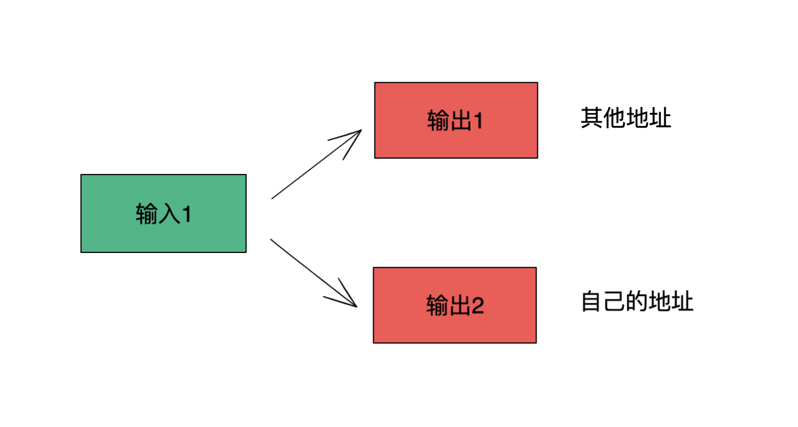
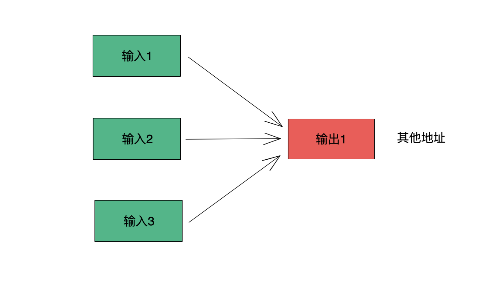
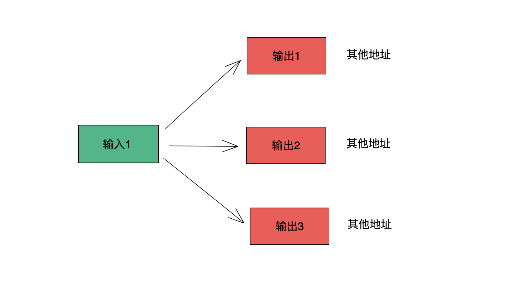
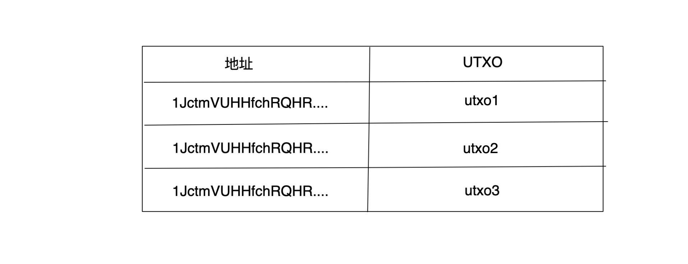
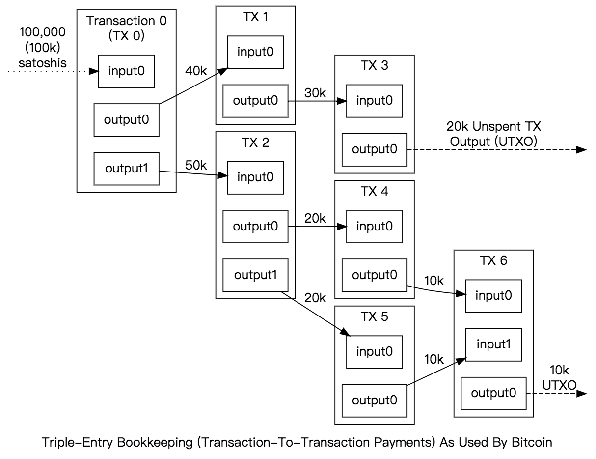

比特币的账户模型
在区块链中，有两种账户模型：一种是账户模型，一种是比特币所用的 UTXO 模型。账户模型比较好理解，我们的的银行账户都是账户模型，在数据库中维护一条数据，我们余额的增加或者减少都是基于这条数据来进行的。
而 比特币所以的 UTXO 模型也被称之为 Transaction-Based 模型，就是说所有的数据都是记录在交易里面的，如果想要知道一个人的账户里面有多少钱，只能通过交易来推算。这篇文章，我们来聊一下比特币的 UTXO。
1. 比特币中交易类型
在比特币中，有三种常见的交易类型，一种是支付一部分给别人，然后给自己一部分找零，这个是要把一个 UTXO 拆成两个，关于找零的概念，我们下边再聊。

另外一种是需要付给别人一笔比特币，然后通过把多个 UTXO 凑在一起，发给其他用户，形成一个新的 UTXO，这种好比是将很多零钱换成了一个大额面值的钞票。

还有一种，就是在一笔交易中，需要给多个人发送比特币，就会把一个大的 UTXO 换成多个小的 UTXO，这里好比是将一张大额的钞票换成多张小额的钞票。

在一笔交易中，输入的 UTXO 的总额一般都要略大于输出的 UTXO，这是因为其中一部分的比特币，被矿工作为交易的手续费拿走了。
2. UTXO 模型
比特币是基于交易装账本，就是说全部的数据都存在区块链账本中。并没有一个地方记录了哪个账户下有多少币。一个账户拥有多少币，需要根据交易来推算。
比特币的全节点上需要维护 UTXO 这样的一个数据结构，UTXO 的全称是（Unspent Transaction Output）。全节点就是完整运行了比特币软件的网络节点，这种节点一般会参与挖矿。这些 UTXO 是全节点在遍历比特币的账本后提取出来的，然后在内存中维护。
如果在交易发起的时候，还需要去链上查询 UTXO，那么肯定会耗时很长，为了让 UTXO 的查询更快一下，全节点会扫描整条链，然后来生成地址和 UTXO 之间的映射关系。方便交易的时候快速查询。就会形成下面的结构：

在进行一笔交易的时候，全节点会去 UTXO 中集合中找到符合条件的 UTXO，然后再用所有者的私钥签名来发起交易。
每一笔交易都会花掉一些 UTXO，同时也会生成一些新的 UTXO。假如现在你有一笔 2 BTC 的 UTXO，但这时候需要支付给一个人 0.5 BTC，那么这个交易就会把这个 UTXO 拆成 0.5 和 1.5 BTC （由于有手续费，实际会略小于 1.5 ）的两个 UTXO，0.5 BTC的 UTXO 会发送到别人的地址下，1.5 BTC 的 UTXO 会返回到你的地址下，这个方式也被称之为找零。
被拆成两部分的 UTXO 也会被重新加入到 UTXO 的集合，供后面的交易使用，然后就会形成下面的交易链：

UTXO 中的每一个输出要给出产生该输出的交易 hash，以及在这个交易中是第几个输出。
这些流通的比特币，都来源于最开始比特币区块的产出。每个区块在被挖出来的时候会产生一个特殊的交易，被称之为铸币交易（coinbase-transaction）。这个交易会向那个挖出区块的地址发送一定数量的比特币，最开始是 50 个比特币，然后大约每隔四年左右，铸币交易产生的比特币会减半一次。
运行全节点的节点比较是少数，大多数的人使用的还是手机钱包，对于手机钱包，自然无法在手机上来维护这个数据，所以手机钱包一般是去请求某个服务器，从服务器上获得结果。
可以根据 API 来查询一个地址中未消费的比特币：
curl --location --request GET http://www.tokenview.com:8088/unspent/btc/1JctmVUHHfchRQHR1K1v9E9rs3mSWLGEmt/1/50
然后就可以得到该地址的 UTXO:
{
"code": 1,
"msg": "成功",
"data": [
{
"block_no": 707638,
"output_no": 0,
"index": "23",
"txid": "e167d10b492465e5a1b4d15176fa580af21cae314da337184f82089daf9bc740",
"hex": "76a914c143e8f3f235ca9e82df0a017f01cd3f91ff3d4388ac",
"confirmations": 3629,
"value": "0.00231716"
},
{
"block_no": 628354,
"output_no": 0,
"index": "16",
"txid": "8f8153d676adfb1ceb27154b96f025a6898d6ee49522cf38b847a63f93527372",
"hex": "76a914c143e8f3f235ca9e82df0a017f01cd3f91ff3d4388ac",
"confirmations": 82913,
"value": "0.00231716"
}
]
}
confirmations 表示该区块后面连接的区块数，区块数越大说明当前的 UTXO 越安全，被篡改的机率就越小， value 就是 UTXO 中包含的比特币的数量，txId 是输出改 UTXO 的交易Id，output_no 则是表示这是上一笔交易中的第几个输出。
3. 解决双花问题
在数字货币系统中，双花问题是必须要解决的。双花问题是指一分钱被花两次的情况。而比特币利用 UTXO 模型，很好的解决了这个问题。
由于每一笔 UTXO 在花出去的时候，都需要经过所有者的私钥签名。那些花出去了的 UTXO 就会从集合中被删除。如果有人想把 UTXO 花两次，立马就可以被发现，两笔交易中一定会有一笔会失败。
4. 以太坊为什么不使用 UTXO
V 神认为 UTXO 不能很好的满足以太坊的要求。以太坊以智能合约为核心，UTXO 的这种模型会让智能合约操做资金变得非常复杂。每次转账都需要小心翼翼的组合 UTXO。而且以太坊中资金转移的非常频繁，UTXO 占用的空间要远大于账户模型。
但是话又说回来，比特币坚决不在链层做类似智能合约之类的功能，它就是把自己定位于最底层的应用，最近 Taproot 的升级让比特币看起来更具有生命力，基于比特币上的应用生态还是有比较大的想象空间，对于比特币的 Layer2 的方案，目前还没有完全确定，但是也完全值得期待。
反观以太坊，一开始就把自己定位于通用计算，这样初始的生态在智能合约的爆发下确实做起来了，但是现在用户的实现体验有点太差了， gas 费高，交易速度慢，以太坊现在被人称之为富人链。所以现在以太坊着急推出 Layer2，只有系统可以支持更高频、更小额的交易，才能吸引到足够的用户。
5. 交易所里的比特币
还有一点需要注意，有很多中心化的交易所会提供比特币的交易，但交易所里面的比特币不是基于 UTXO。
当你在交易所充币的时候，交易所会为你设立一个账户，然后后续所有的交易都是基于这个账户进行的，并不会和链进行交互。
这样做有两个好处，第一个交易的速度更快，比特币网络上一笔交易的确认需要等不少时间，当交易很多时，速度会更慢。第二，省下了不少手续费。由于不与链交互，自然就不用交易的手续费。当然，交易所本身还是会从你的每一笔交易中收费。
也就是说，在交易所里的交易，并不是真正在链上进行交易。只有在把币从交易所提走的时候，才会把币打回到链上的地址。
文 / Rayjun